Logo Design + Brand Identity
Trinity Telecom
Trinity Telecom, LLC was a telecommunications company with more than 15 years of experience serving residential and commercial clients. Its work included structured cabling, networking, CCTV, wireless installations, audio/video wiring, and other communication services. The company built its identity around dependable service, skilled workmanship, and a strong customer-first approach.
The visual system was created to support a real operating company and was used across signage, company vehicles, work apparel, social media, promotional graphics, and event materials.
01 — Identity Direction
From Concepts To Final Mark
The Trinity Telecom identity was designed to feel modern, connected, and reliable. The symbol uses motion and structure to suggest communication, signal flow, and technology, while the purple and blue palette gives the brand a strong, recognizable presence.
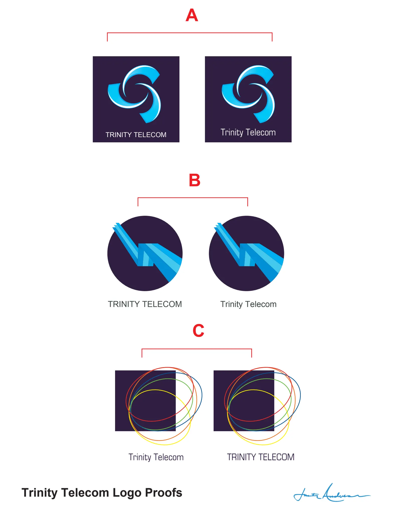
Early Concepts
Multiple logo directions explored shape, movement, typography, and different ways to communicate connectivity.
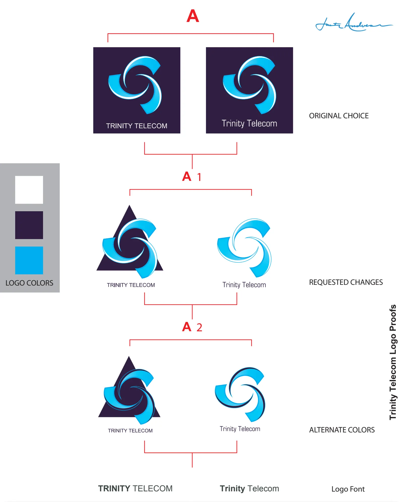
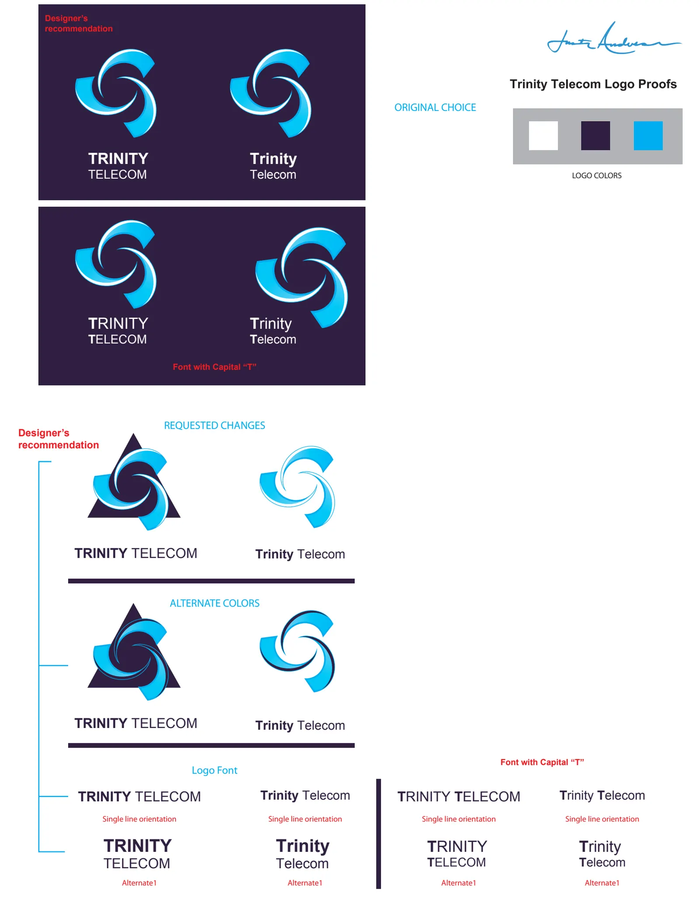
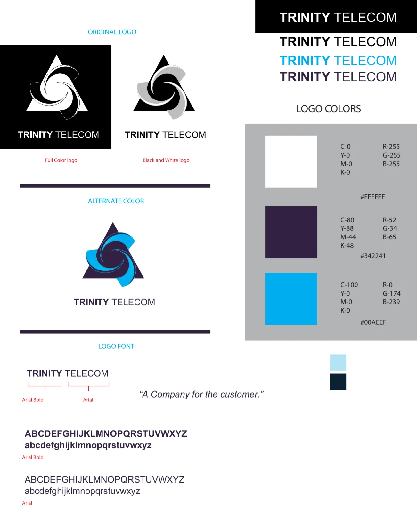
Refinement + System
The selected direction was refined through client feedback, alternate color treatments, typography testing, and final brand specifications.
02 — Final Identity
A Recognizable Visual System
The final identity paired the flowing blue symbol with a structured triangular form and a straightforward wordmark. The finished system could stand alone as a mark, lock up with the company name, and remain recognizable across different applications.
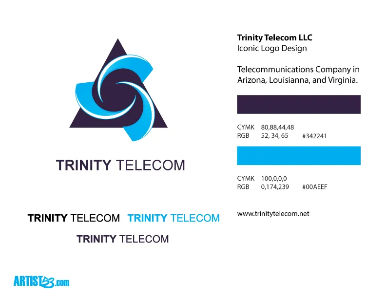
“A Company for the Customer”
03 — Brand Expansion
Identity In The Real World
The Trinity Telecom identity was designed to work beyond the original logo presentation. The mark was used across company signage, work shirts, service vehicles, social media graphics, promotional materials, and event artwork. Seeing the logo carried across trucks, apparel, and physical branding helped establish a consistent presence in the real world as well as online.
Built To Travel
The company vehicle fleet turned the identity into moving signage. The logo remained readable and recognizable at large scale while reinforcing the company’s professional presence in the field.
That same system carried into work apparel and other physical brand applications.
04 — Social Media + Brand Communication
More Than A Logo
The Trinity Telecom identity was also used across the company’s social media presence. Branded content included telecommunications facts, “Did You Know?” features, industry news and articles, employee birthday shout-outs, work anniversaries, and employee recognition. These pieces helped give the company a more consistent and recognizable voice online while extending the visual identity beyond the logo itself.
Published In Use
Social Content On The Company Page
The screenshots below document how the identity and content system appeared on Trinity Telecom’s Facebook page while the company was operating.
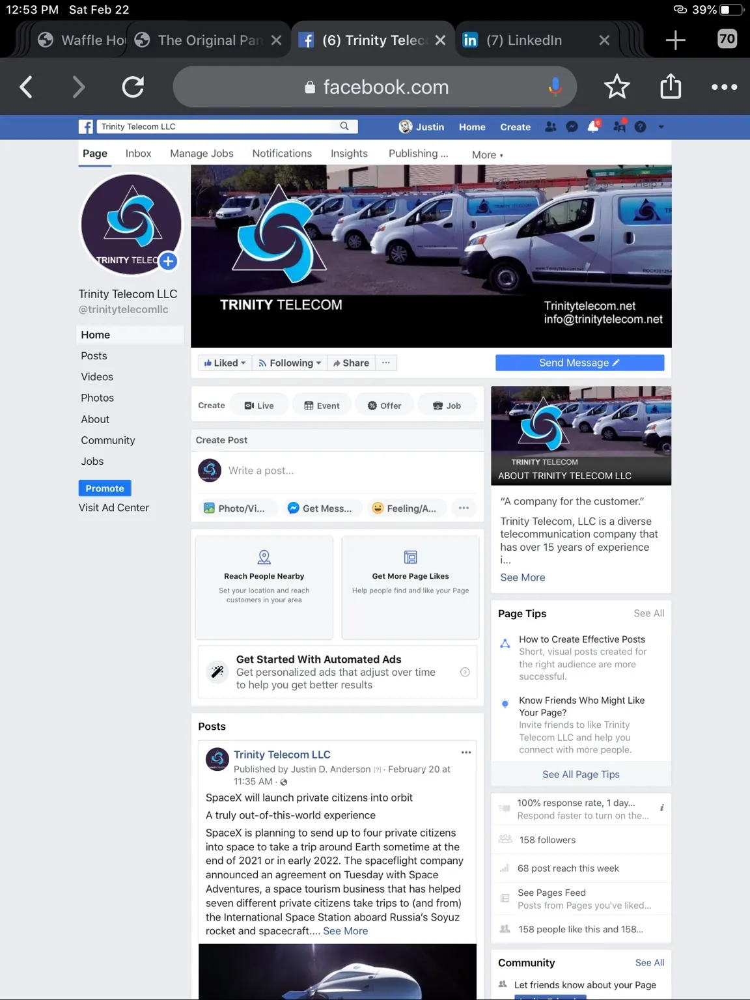
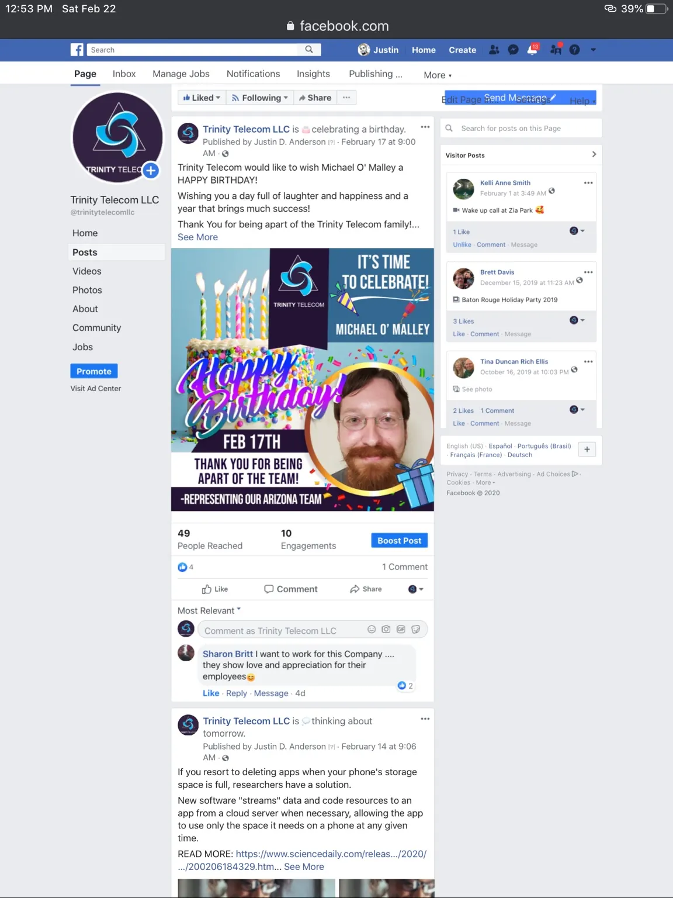
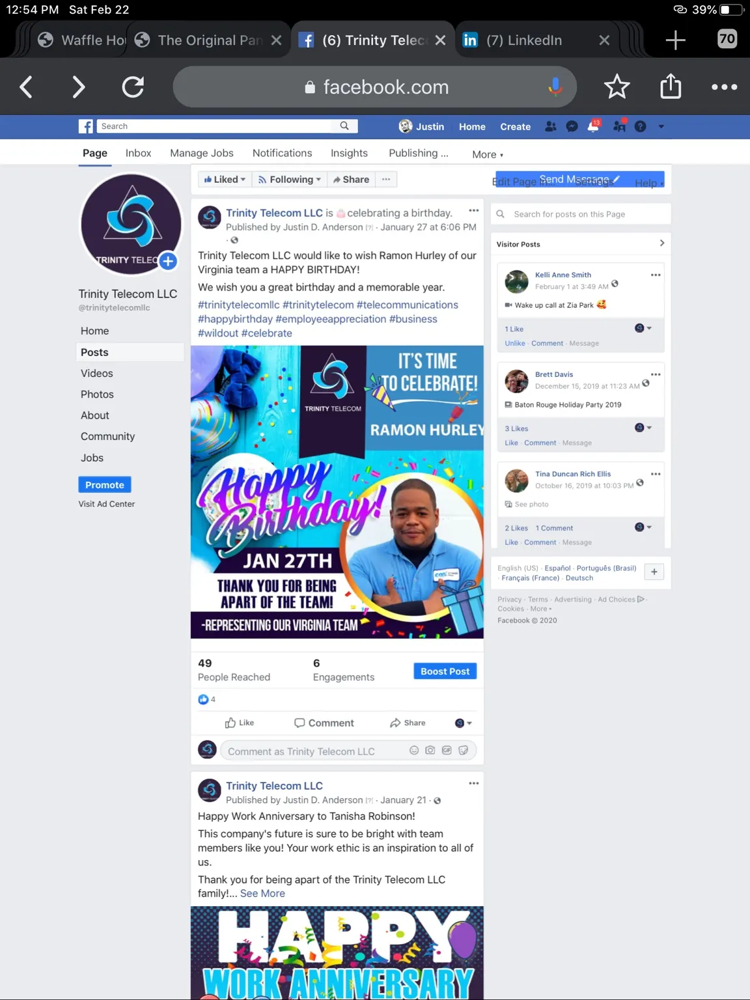
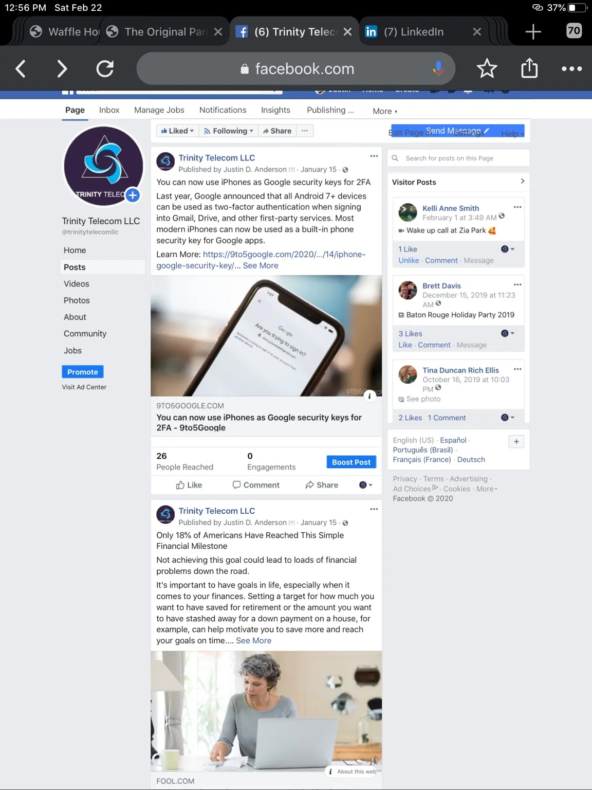
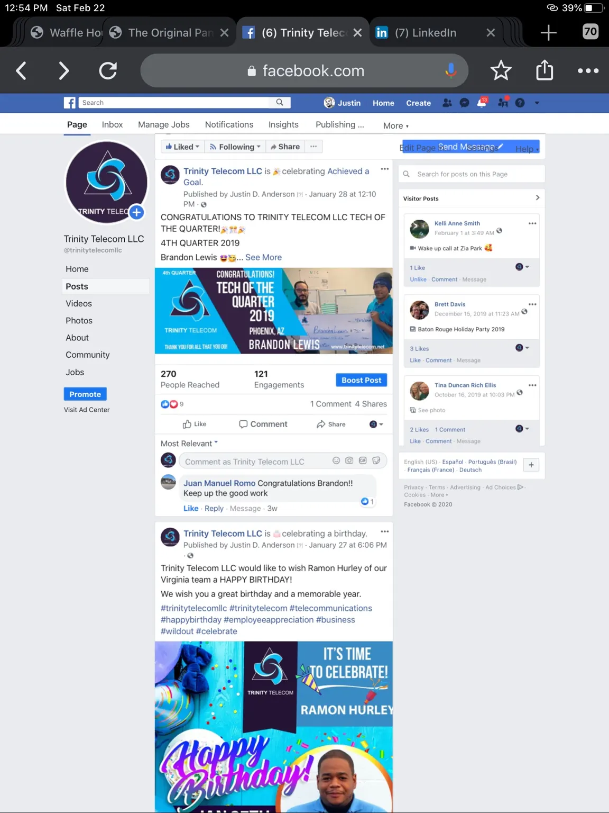
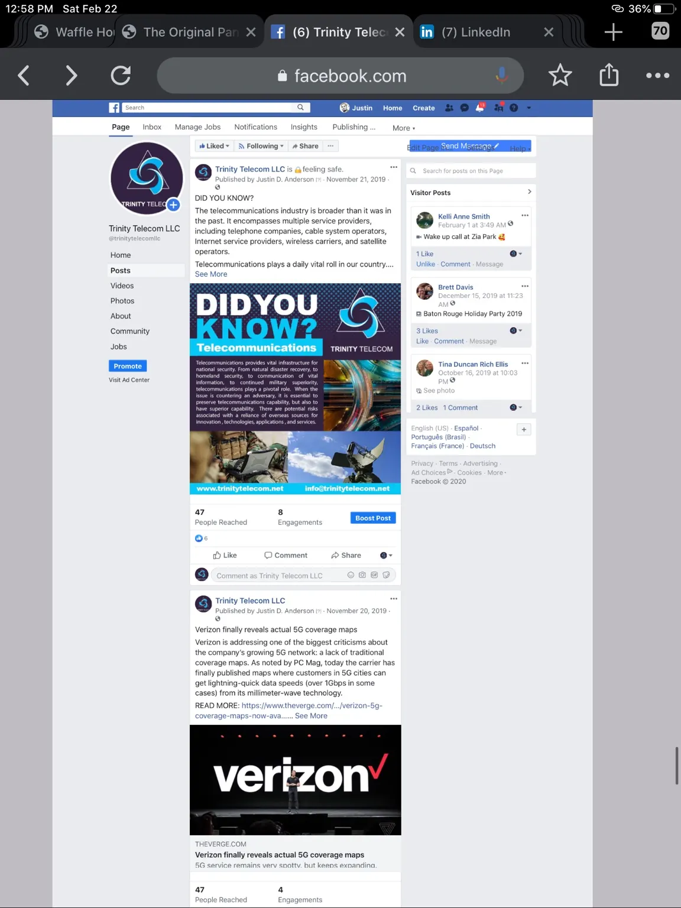
05 — Event Illustration
Paintball Shootout
For a Trinity Telecom paintball event, I created a custom illustration designed for a T-shirt. The artwork pushed the brand into a more energetic direction while still using the company’s established colors and identity.
It demonstrated how the visual system could stay professional for everyday business use while stretching into a more expressive, event-driven application when needed.
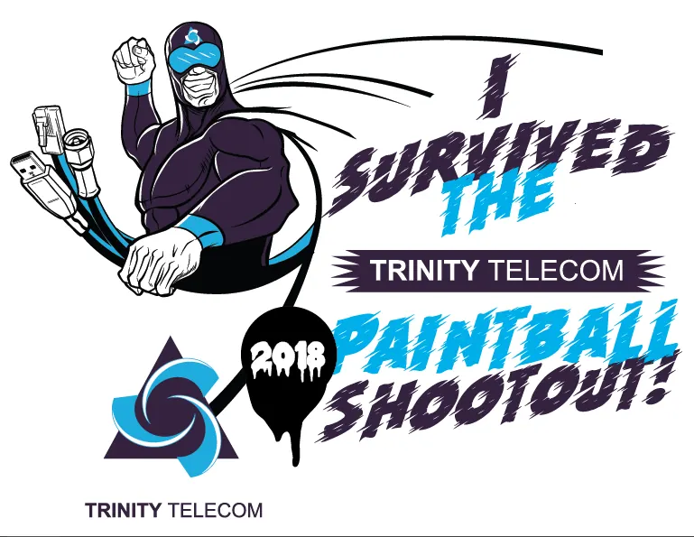